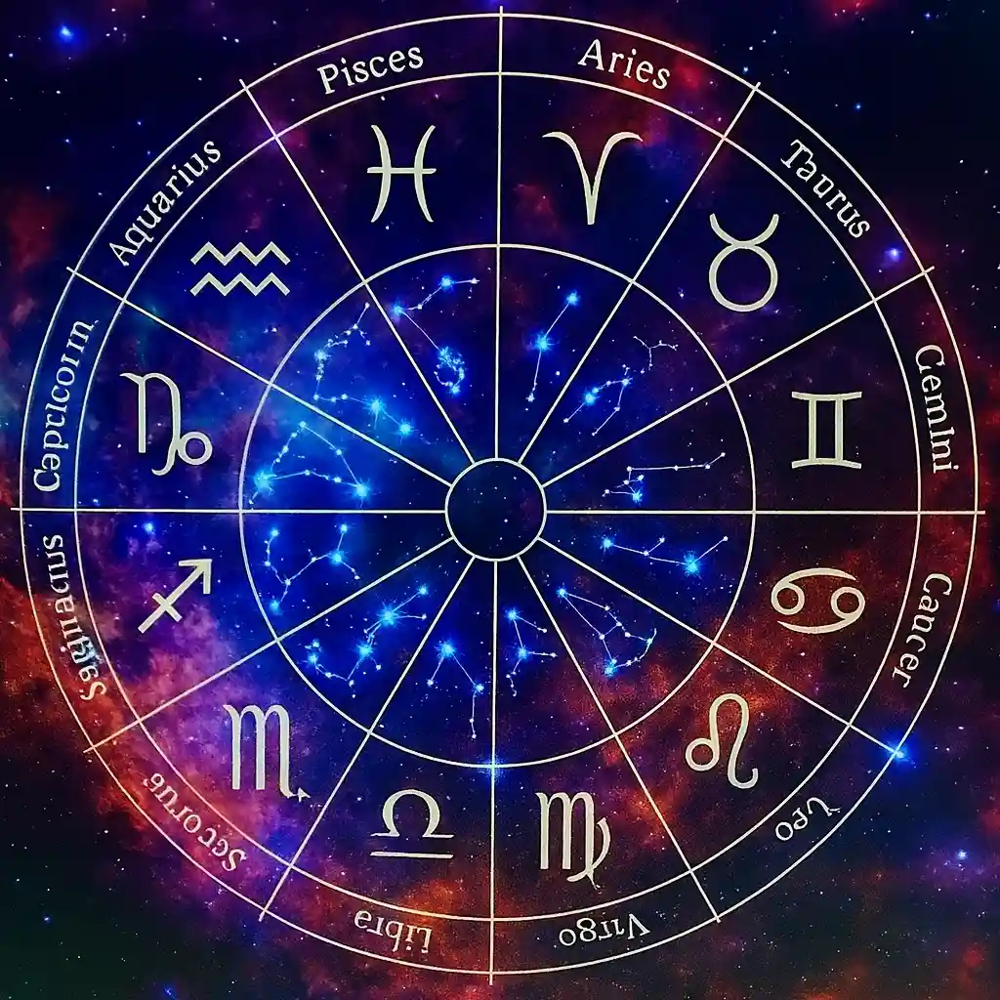

Each consultation opens a space for clarity, reflection, and alignment, tailored to your individual needs.
My Services
Natal Chart — A Reading of Your Birth Map
A deep exploration of your inner structure, potential, challenges, and inner resources. This reading helps you better understand yourself, your personal dynamics, and reconnect with your authentic path.
Request This SessionRelationship Chart — Insight into Interpersonal Dynamics
An analysis of the interaction between two or more birth charts: couples, families, friends, or professional relationships. This approach brings to light areas of harmony, tension, and the keys to creating more conscious and balanced connections.
Request This SessionAnnual Forecast — A Reading of the Year’s Energetic Cycles
A personalized overview of the major themes and transitions: key periods, opportunities, and times of transformation. This consultation is not only about predicting, but about helping you navigate your journey with clarity, intention, and awareness.
Request This Session